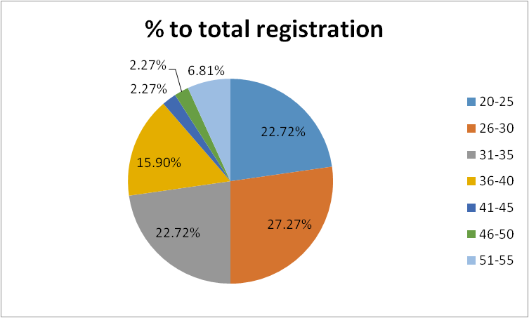
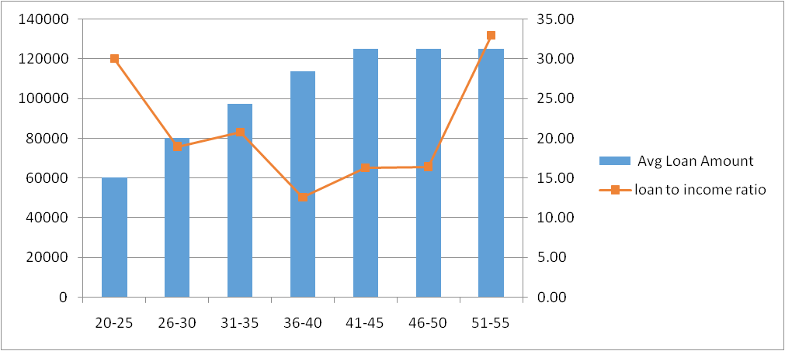
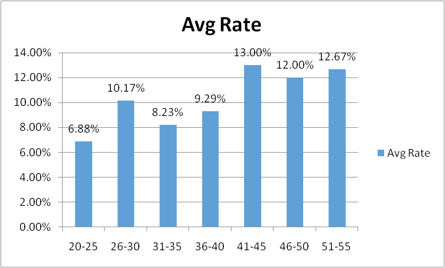

Peer2Peer Finance is fast becoming quite popular in India and the success of Faircent in their short period of operations bears testimony to the fact.
Age Distribution
It is not surprising that this new age e-platform draws the younger crowd more easily. Over 70% of the registered borrowers in Faircent are in the range of 20 – 35 years of age. The percentage share of each age group is depicted in the chart below. However, it is interesting to note that the actual range is much wider, with people of the age group 51-55 years also joining the platform. This wide profile proves that P2P is not just a fad for the youngsters but is perceived as a serious option by people across all age groups who understand the utility of this service.

Loan Amount
As expected, the total loan amount sought varies according to age group, with the more senior borrowers filing for higher loan amounts. The average loan amount required by the youngest age group of 20-25 years is around Rs. 60,000, while the more senior borrowers are looking for loans above Rs. 1 lakh. Mostly, the loans sought are for a period of 12 months.

Repayment Risk
The loan to income ratio (total loan amount sought as a percentage of annual income calculated on the basis of monthly salary) shows that barring the extreme age groups, the borrowers are seeking loans which are below 20% of their total incomes. Thus, the repayment capacities for the age groups are within respectable ranges and risks of default can be perceived to be low. The highest ratio is 32% for the most senior age group, which too is within a decent range.
Main Reasons for Borrowing
Most borrowers cited debt restructuring as the main reason for borrowing. This in turns means that most of them have some other repayment obligations which they seek to sort out via P2P borrowing. This follows the international trend of P2P, where credit card loan settlement is one of the primary drivers for P2P borrowing. The trend seems to be catching up in India as well, with smart borrowers registering on Faircent to pay a single EMI at low interest rate rather than repaying credit card companies at high interest rate.
Weddings or family events are the second most popular reason cited by borrowers. Traditionally, such expenses would be usually covered by borrowing within the family or personal loans from banks. The advent of P2P borrowinghas opened a new discreet and easily approachable opportunity for people in need of loans for family exigencies without having to resort to personal loans which usually have very high repayment burdens.

The real reason for the borrowers resorting to Faircent is evident from the interest rates they offer for the loans. The youngest age group expectedly offers the lowest rates of around 7%. The more matured age group offer more realistic rates of around 12-13% for their loans. This rate is lower than present personal loan rates from most commercial banks, which are in the range of 14 – 19%.Given the fact that most of the loan requirements are for former loan restructuring, the rate margin is of crucial importance to most borrowers and the flexibility that Faircent offers is a boon for most of them.
Seen from the lender’s perspective, a rate of 12-13% is much higher than Fixed Deposit (FD) rates offered by banks, which hover around 9% currently. Many banks actually require FD commitments for over 12 months for such rates, ranging from 400-500 days lock in period to around 15 months. Therefore, from a lender’s point of view, an offer of 12-13% for around 12 months at Faircent offers higher rate of returns with a lower lock in period. The possibility of spreading out ones loan across borrowers mean that the risk can be hedged and actual returns can be tweaked to one’s satisfaction.
Faircent offers a better deal for both borrowers and lenders as compared to conventional financial institutions. The age spread and interest rates offered show that borrowers approach Faircent as a serious option for loans. The borrower pool makes Faircent a perfect option for potential investors to lend in this platform and ensure better and safer returns for their investments.